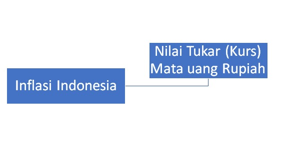
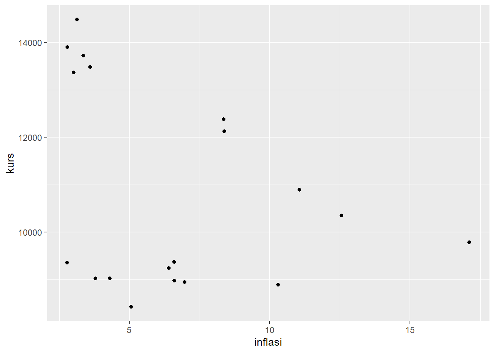

library(tidyverse)
library(readxl)
library(writexl)PENGARUH INFLASI INDONESIA TERHADAP KURS MATA UANG INDONESIA (RUPIAH) TAHUN 2001-2019
Metode Penelitian Politeknik APP Jakarta
1 Pendahuluan
1.1 Latar belakang
Inflasi adalah suatu keadaan perekonomian dimana harga-harga secara umum mengalami kenaikan. Inflasi secara umum dapat terjadi karena jumlah uang yang beredar lebih banyak daripada yang dibutuhkan. Inflasi juga menurunkan minat investor khususnya investor dari luar negeri karena inflasi akan menurunkan nilai mata uang domestik (Wibowo, 2021). Kurs atau nilai tukar Rupiah adalah nilai Rupiah dibanding dengan nilai mata uang asing. Apresiasi dan depresiasi nilai tukar merupakan tantangan bagi Indonesia dalam perdagangan internasional. Terjadinya depresiasi yang besar dalam rupiah akan memicu kejatuhan ekonomi oleh karena itu pemerintah perlu melakukan kebijakan-kebijakan untuk menjaga nilai tukar Rupiah. Dekatnya hubungan kurs rupiah dan inflasi membuat merosotnya rupiah akan menyebabkan inflasi (imported inflation) melesat seperti tahun 1998. Sementara inflasi yang tinggi terhadap negara-negara lain akan membuat kurs rupiah semakin melemah, sesuai dengan teori paritas daya beli. Neraca pembayaran Indonesia (NPI) mendapat tekanan dari adanya ketidakpastian global yang tinggi dan banyak memengaruhi dinamika nilai tukar Rupiah pada tahun 2018. Situasi tersebut di dukung dengan kenaikan Federal Funds Rate (FFR) dan ketidakpastian pasar keuangan global. Hal ini juga yang mengakibatkan aliran masuk modal asing ke negara berkembang menjadi berkurang, termasuk Indonesia. Pada Oktober 2018, Indonesia mengalami tekanan terbesarnya, tekanan ini searah dengan pelemahan banyak mata uang negara berkembang lain, sejalan dengan dampak ketidakpastian global yang meningkat tersebut.
1.2 Ruang lingkup
Ruang lingkup pembahasan masalah sesuai dengan variable yang akan digunakan pada analisis kali ini, yaitu seputar Inflasi dunia dengan kurs mata uang Rupiah. Batasan ini dibuat dengan pertimbangan data yang cukup luas dan efisiensi waktu yang digunakan apabila menambah variable lain untuk dibahas.
1.3 Rumusan masalah
- Seberapa besar pengaruh inflasi terhadap kurs mata uang Rupiah?
- Apakah Inflasi memiliki pengaruh yang besar terhadap nilai tukar mata uang Rupiah?
- Bagaimana kurs mata uang Rupiah dapat berubah seiring Inflasi yang terjadi? Faktor apa saja yang mendukung keadaan kurs mata uang rupiah pada Inflasi?
1.4 Tujuan dan manfaat penelitian
- Untuk mengetahui seberapa besar pengaruh inflasi terhadap kurs mata uang Rupiah
- Mengetahui apakah inflasi memilikipengaruh yang besar terhadap nilai tukar mata uang Rupiah
- Menjelaskan bagaimana kurs mata uang Rupiah dapat berubah seringin inflasi dan Faktor apa saja yang mendukung keadaan kurs mata uang pada Inflasi
1.5 Package
Ini tidak wajib ada di packages yang digunakan antara lain sebagai berikut:
2 Studi pustaka
Nilai tukar
Nilai tukar atau kurs (foreign exchange rate) adalah harga mata uang suatu negara relatif terhadap mata uang negara lain (Ekanada, 2014:168). Nilai tukar atau yang sering disebut kurs (ex-change rate) adalah jumlah mata uang tertentu yang dapat ditukar terhadap satu unit mata uang lain. Nilai tukar rupiah terhadap mata uang lainnya berpengaruh terhadap laba suatu perusahaan, karena perusahaan yang menggunakan bahan produksi dari luar negeri akan mengalami peningkatan nilai hutang apabila nilai mata uang rupiah terhadap mata uang asing menurun atau terdepresiasi, nilai tukar juga sangat berpengaruh bagi perusahaan yang ingin melakukan investasi, karena apabila pasar valas lebih menarik daripada pasar modal maka umumnya investor akan beralih ke pasar valas (Ria Manurung, 2016). Keseimbangan Nilai Tukar, pada suatu waktu tertentu, mata uang harus mencerminkan harga dimana permintaan atas mata uang tersebut setara dengan penawaran dan hal ini merupakan keseimbangan kurs mata uang (Ekanandam 2014; Wibowo, 2020) Jenis-jenis Penentuan Nilai Tukar (Ekananda, 2014) :
- Purchasing Power Parity (Gustav Cassel, 1918), paritas daya beli menghubungkan kurs valas dengan harga-harga komoditi dalam mata uang lokal di pasar internasional, yaitu bahwa kurs akan cenderung menurun dalam proporsi yang sama dengan laju kenaikan harga.
- Trade Balance (Salvatore, 1997), menghitung nilai tukar melalui pertukaran barang dan jasa antar negara.
- Monetary Approach, nilai tukar ditentukan oleh harga relatif permintaan dan penawaran uang.
- Portofolio Balance Approach (Banson, 1989), diasumsikan penduduk akan mendiversifikasi uang dalam bentuk portofolio sebagai tindakan enggan mengambil resiko (risk aversion).
Inflasi
Menurut Fahmi (2014), inflasi merupakan suatu kejadian yang menggambarkan situasi dan kondisi dimana harga barang mengalami kenaikan dan nilai mata uang mengalami pelemahan. Sebab-sebab terjadinya inflasi menurut Amalia (2007) adalah:
- Defisit financing, yaitu diadakannya pengeluaran-pengeluaran dalam rangka untuk memperbesar kapasitas produksi (investasi) yang tidak cepat-cepat menghasilkan tambahan produk dengan memakai tabungan.
- Terjadinya surplus ekspor, yaitu pendapatan bertambah sedangkan jumlah barang berkurang. Ini mengakibatkan demand terhadap barang-barang bertambah, sedangkan supply barang-barang berkurang.
- Inflasi yang diimpor dari luar negeri yaitu dimana barang atau bahan baku diimpor dari negara yang dilanda inflasi, maka negara tersebut harus mengimpor dengan harga-harga yang tinggi.
- Terjadinya surplus impor, yaitu dimana suatu negara memerlukan devisa untuk membayar kelebihan impor tersebut kepada luar negeri, permintaan yang besar terhadap devisa umumnya akan meningkatkan kurs valuta asing.
Kerangka Penelitian

fishbone
3 Metode penelitian
3.1 Data
DATA KURS INDONESIA 2001-2019
| Tahun | Kurs |
|---|---|
| 2001 | 10348 |
| 2002 | 8895 |
| 2003 | 8423 |
| 2004 | 9244 |
| 2005 | 9781 |
| 2006 | 8975 |
| 2007 | 9372 |
| 2008 | 10895 |
| 2009 | 9353 |
| 2010 | 8946 |
| 2011 | 9023 |
| 2012 | 9023 |
| 2013 | 12128 |
| 2014 | 12378 |
| 2015 | 13726 |
| 2016 | 13369 |
| 2017 | 13480 |
| 2018 | 14481 |
| 2019 | 13901 |
| 2020 | 14105 |
| 2021 | 14269 |
| 2022 | 14269 |
| Negara | Tahun | Inflasi |
|---|---|---|
| INDO | 2001 | 12,55 |
| INDO | 2002 | 10,3 |
| INDO | 2003 | 5,06 |
| INDO | 2004 | 6,4 |
| INDO | 2005 | 17,11 |
| INDO | 2006 | 6,6 |
| INDO | 2007 | 6,59 |
| INDO | 2008 | 11,06 |
| INDO | 2009 | 2,78 |
| INDO | 2010 | 6,96 |
| INDO | 2011 | 3,79 |
| INDO | 2012 | 4,3 |
| INDO | 2013 | 8,38 |
| INDO | 2014 | 8,36 |
| INDO | 2015 | 3,35 |
| INDO | 2016 | 3,02 |
| INDO | 2017 | 3,61 |
| INDO | 2018 | 3,13 |
| INDO | 2019 | 2,79 |
Penelitian ini menggunakan data Inflasi Indonesia dan Kurs Mata Uang Rupiah darai Badan Pusat Statistik (BPS)
Baca data
#import dataset
library(readxl)
dat<-read_excel('regresisafa.xlsx')
head(dat)# A tibble: 6 × 4
negara year inflasi kurs
<chr> <chr> <dbl> <dbl>
1 INDO 2001 12.6 10348
2 INDO 2002 10.3 8895
3 INDO 2003 5.06 8423
4 INDO 2004 6.4 9244
5 INDO 2005 17.1 9781
6 INDO 2006 6.6 8975ggplot(data=dat,aes(x=inflasi,y=kurs)) +
geom_point()
3.2 Metode analisis
Metode yang dipilih adalah regresi univariat atau Ordinary Least Square (OLS) dengan 1 variabel independen. Penelitian ini bermaksud mencari hubungan antara INFLASI INDONESIA dan KURS RUPIAH. Spesifikasi yang dilakukan adalah:
\[ y_{t}=\beta_0 + \beta_1 x_t+\mu_t \] di mana \(y_t\) adalah kurs dan \(x_t\) adalah inflasi.
4 Pembahasan
4.1 Pembahasan masalah
Disini saya menggunakan OLS, Pembahasan yang saya ambil adalah untuk menghubungkan Inflasi dan Kurs Mata uang Rupiah, kemudian data data yang saya dapatkan dari Badan Pusat Statistik disatukan untuk di regresi dan tampilannya adalah sebagai berikut :
#import dataset
library(readxl)
dat<-read_excel('regresisafa.xlsx')
head(dat)# A tibble: 6 × 4
negara year inflasi kurs
<chr> <chr> <dbl> <dbl>
1 INDO 2001 12.6 10348
2 INDO 2002 10.3 8895
3 INDO 2003 5.06 8423
4 INDO 2004 6.4 9244
5 INDO 2005 17.1 9781
6 INDO 2006 6.6 89754.2 Analisis masalah
Hasil regresinya adalah
reg1<-lm(kurs~inflasi,data=dat)
summary(reg1)
Call:
lm(formula = kurs ~ inflasi, data = dat)
Residuals:
Min 1Q Median 3Q Max
-2682.8 -1843.2 557.9 1878.3 3036.2
Coefficients:
Estimate Std. Error t value Pr(>|t|)
(Intercept) 11994.7 946.0 12.679 4.31e-10 ***
inflasi -175.7 123.6 -1.421 0.173
---
Signif. codes: 0 '***' 0.001 '**' 0.01 '*' 0.05 '.' 0.1 ' ' 1
Residual standard error: 2050 on 17 degrees of freedom
Multiple R-squared: 0.1061, Adjusted R-squared: 0.05355
F-statistic: 2.018 on 1 and 17 DF, p-value: 0.1735library(readxl)
dat<-read_excel("regresisafa.xlsx")
reg<-lm(kurs~inflasi,data=dat)
summary(reg)
Call:
lm(formula = kurs ~ inflasi, data = dat)
Residuals:
Min 1Q Median 3Q Max
-2682.8 -1843.2 557.9 1878.3 3036.2
Coefficients:
Estimate Std. Error t value Pr(>|t|)
(Intercept) 11994.7 946.0 12.679 4.31e-10 ***
inflasi -175.7 123.6 -1.421 0.173
---
Signif. codes: 0 '***' 0.001 '**' 0.01 '*' 0.05 '.' 0.1 ' ' 1
Residual standard error: 2050 on 17 degrees of freedom
Multiple R-squared: 0.1061, Adjusted R-squared: 0.05355
F-statistic: 2.018 on 1 and 17 DF, p-value: 0.17355 Kesimpulan
Berdasarkan hasil dari regresi yang telah dilakukan, dapat disimpulkan bahwa setiap 1% inflasi mengurangi 175.7 dari nilai kurs rupiah, dan Inflasi berpengaruh terhadap kurs mata uang Rupiah pada tahun 2001-2019.
6 Referensi
Wibowo, B. (2021). PENGARUH TINGKAT INFLASI TERHADAP KURS RUPIAH SELAMA PANDEMI COVID-19 DI INDONESIA. 3, 308–314.
LG, E., & Michael, M. (n.d.). Pengaruh inflasi terhadap nilai tukar rupiah. 6(4). https://doi.org/10.29264/jiem.v6i4.9425
PENGARUH TINGKAT INFLASI TERHADAP NILAI TUKAR RUPIAH (Studi Pada Bank Indonesia Periode Tahun 2011-2015). (2017). 5(1). https://www.researchgate.net/publication/323671030_Pengaruh_tingkat_inflasi_terhadap_nilai_tukar_rupiah_Studi_pada_Bank_Indonesia_periode_tahun_2011-2015/fulltext/5aa335b9a6fdccd544b87b14/Pengaruh-tingkat-inflasi-terhadap-nilai-tukar-rupiah-Studi-pada-Bank-Indonesia-periode-tahun-2011-2015.pdf?origin=publication_detail